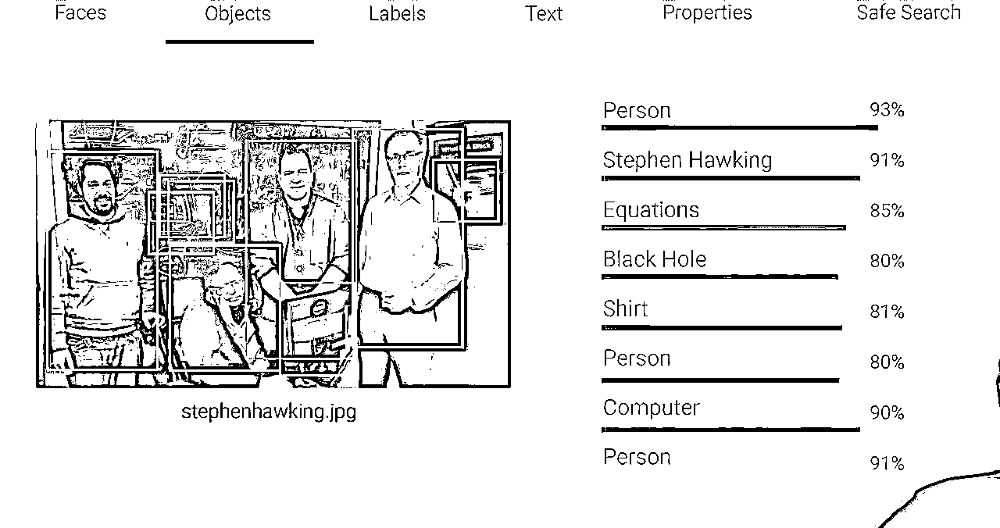
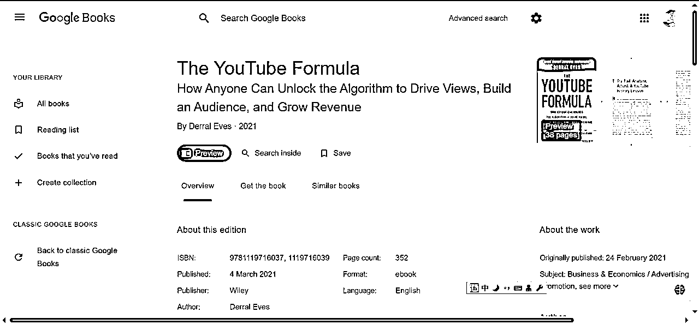
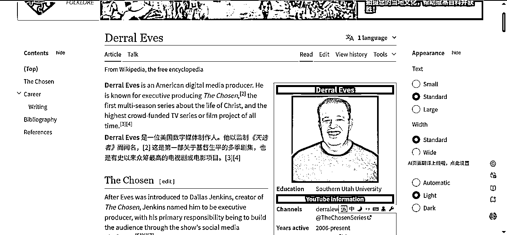
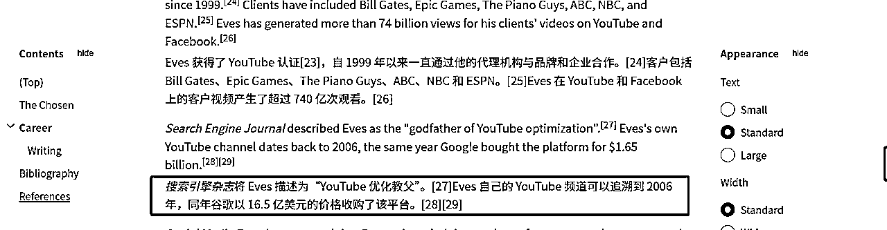
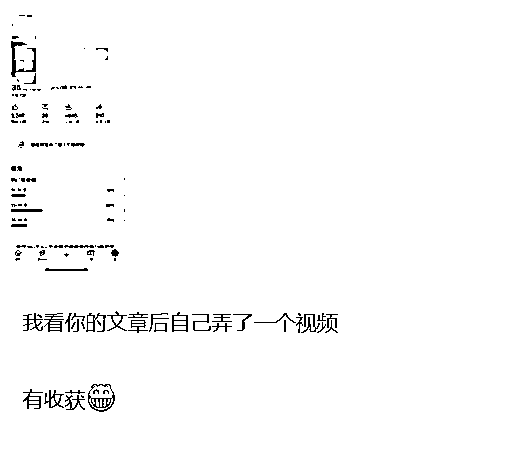
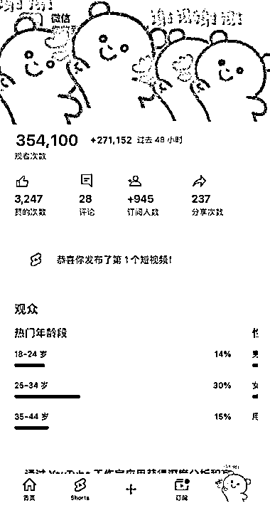
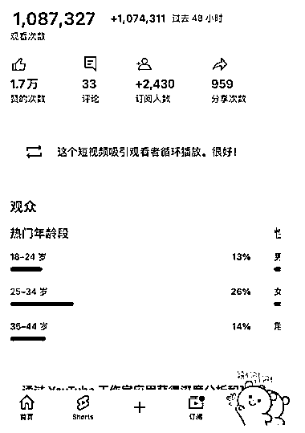

来源：https://rlwxa0zgke.feishu.cn/docx/LGqId4GuEomWxFxB1EZcIEycnfe
在很多的关于YouTube的教程都会提到养号，在国内平台培训课都会有养号两个字，这似乎是一个不成文的规定，比如说新号注册多少天内，是几乎做不起来的，要“养号”，时间到了才能做，不然发什么作品也起不来。
其实这个也是未经证实的”传说“，忽悠小白没问题，对于我来说，我是不认可这个养号的说法的。
YouTube没有养号一说，可以说不用养号也可以，注册好账号直接发也OK。
为什么说不用养号也可以？YouTube是2005年2月14日创办的，到现在已经有20年了，这么多年来的技术沉淀，它的算法是很强大的。
比如下面的一张图，google的算法不弱的，就靠一张图就识别 Person、Stephen Hawking、Equations、Black Hole、Shirt、Person、Computer、Person

油管公式的作者



搜索引擎杂志将 Eves 描述为“YouTube 优化教父,他写的书，在我看来对于做YouTube的人是必看的，在国内做出一点成绩，然后就把国内的经验照抄在YouTube，我认为这是一个偷懒的行为，这是犯了类似于刻舟求剑的错误。
我希望在后续我能看到的关于YouTube的教程中少看到养号相关的描述, goolge（YouTube是google旗下的产品）的算法已经足够强大，不是你所谓你养号就有播放的。
Derral Eves 在书上有过这样的表述——不是油管有问题而是我的视频/内容还不够好 我确实需要把字体进行一个加粗。
【腾讯文档】 油管公式
https://docs.qq.com/doc/DRkRJUFVRZ1JSTGtZ
一般来说， 最少准备两个频道，一个频道是刷刷日常，想看啥就看啥，也包括找对标账号，另一个频道就做垂直。
在日常的账号来找对标账号，找到对标账号后，在垂直账号关注在日常账号找到的对标账号。
为什么这么做？你的垂直账号只关注对标账号，那么垂直账号的首页就只有对标账号（当然也会有其他内容，但是你对标账号的内容会更多），这样方便你抄作业。
分两个频道才是较为专业的操作，总之记住一点，你想过YPP的频道，也就是垂直的频道只关注对标。你日常的账号就是用来看找对标的。
注册好后，如果内容受观众欢迎，自然会有很多人来看，核心关键点在于你的视频的质量。


我们可以试想一下，就算你养了号，你视频做得垃圾，你做一个垃圾就因为你养了号就有人看？答案肯定不是的。
比如说，你养了号还是0播。但是别人不养号直接发播放量还是不错，那么这个养号是否有必要，这是值得质疑的。
YouTube算法是对视频做赛马机制，符合YouTube推送算法，自然会有更多的人来观看你的视频，反之，你做了一个垃圾视频，这里所谓的垃圾视频是针对观众反馈而言。
总之，你做优质视频YouTube自然会帮你推，反之，你就算是养号，你做的是垃圾视频YouTube 也不会推你的视频的。
你的视频在48小时内会给你大力推，如果你看到类似下面的页面，文字提示——【这个短视频吸引观看者循环播放。很好!】你心里就有底了。播放量是有保障的。

以上也是我一家之言
我的观点是：只要你做的视频内容是优质的，无所谓养号，反之，你就算是养号，你做垃圾视频，YouTube也不会帮你推。
后面是一些信息的补充，下次有时间，把YouTube的算法详细版再发一发
YouTube 的目标
1、预测观众想看什么
2、最大限度地提高观众的长期参与度和满意度
人工智能使用多个系统/算法
1、浏览功能:首页(个性化推荐(新的和旧的))和订阅
2、推荐视频:“接下来播放”，同类或相关
3、趋势视频:区域/社群当下关心的热点
4、通知:打开小铃铛
5、搜索:依赖元数据，观众反馈和新鲜度
这些算法，有时间再详细讲，举例说明会更好
油管如何收集用户数据？
油管（YouTube）通过多种方式收集用户数据，以便更好地推荐视频并提升用户体验。以下是一些主要的收集方法：
通过这些方式，油管能够不断优化其推荐系统，提升用户的观看体验并增加用户的停留时间。
视频的原数据有哪些？
视频的原数据通常包括以下几个方面：
油管利用这些原数据来分析视频内容的相关性和安全性，并通过算法进行内容推荐。
如何提高视频在油管的推荐率？
要提高视频在油管上的推荐率，可以考虑以下策略：